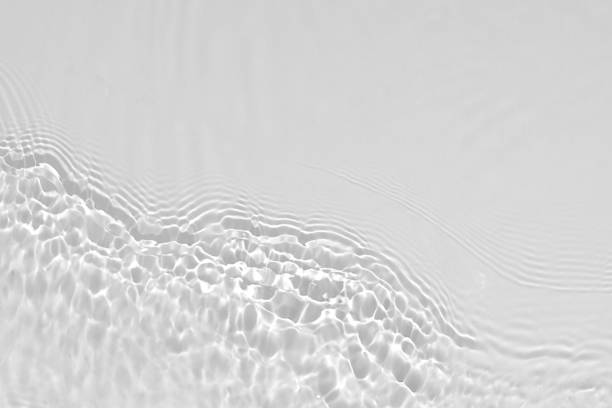

Cindy Hatch
Textos
Edición
UX Content
Contacto
Lee algunos de mis textos publicados
"Citerón: crónica del grito de la liebre"
"Nos habrán cegado para entonces"
Poesía
"Citerón: crónica del grito de la liebre"
"Nos habrán cegado para entonces"
"Tampoco sabemos cómo ser personas"
2 poemas en Letras Libres
2 poemas en Biblioteca de México
"De triunfos y semblanzas"
"3 poemas en Lowfi Ardentía"
"Nocturno invernal"
Ensayo

"Amarearse: Ensayo de vida en el mar"
"Yo en la ciudad: apuntes de bolsillo"
"Lanzar una moneda en primavera"